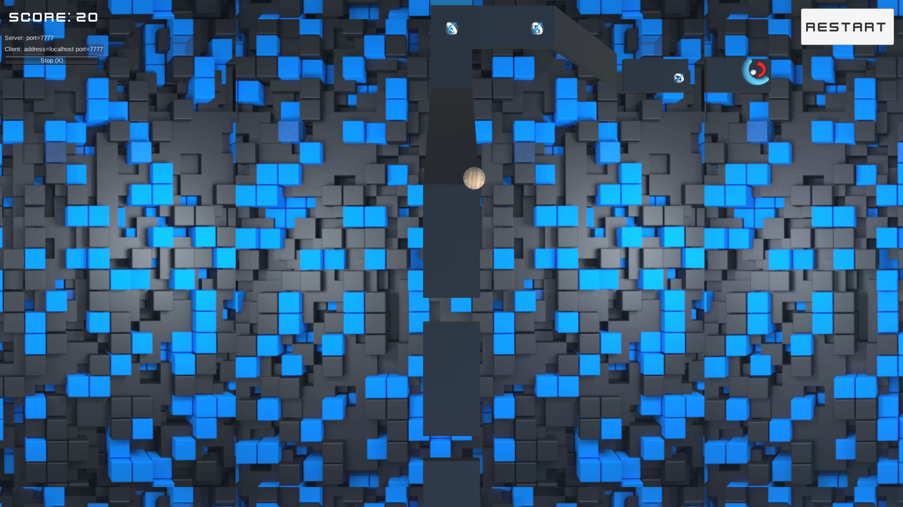
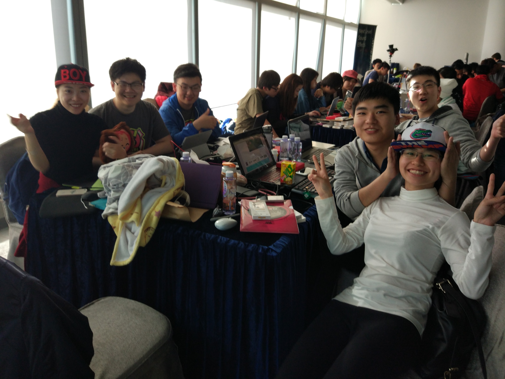
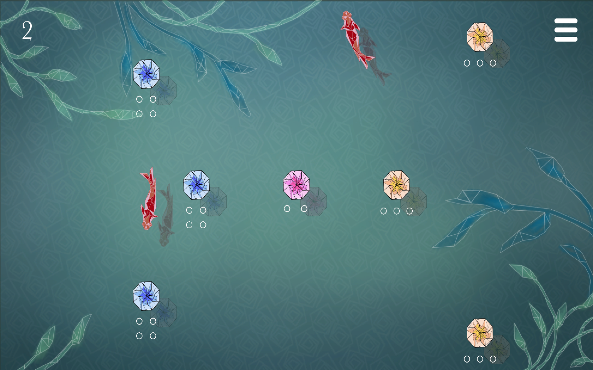
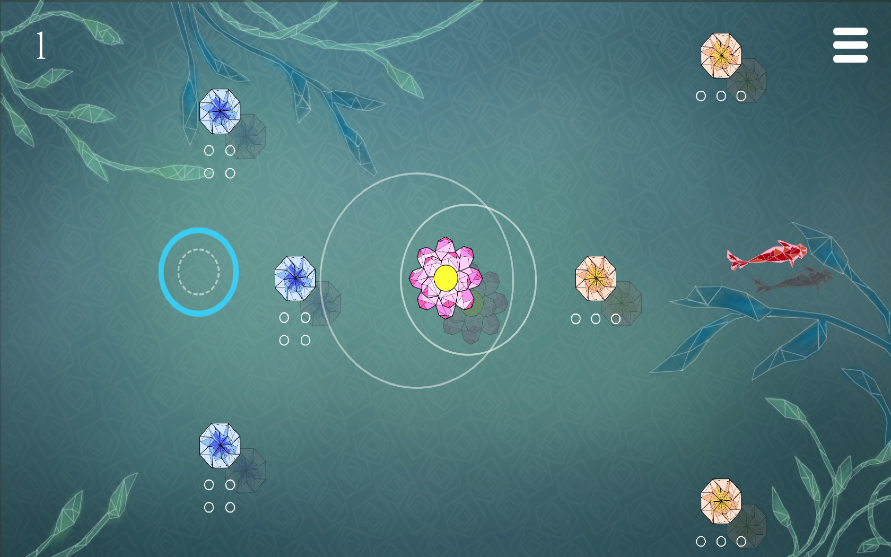

Yidi Zhu
An Aspiring Game Designer
An Aspiring Game Designer
I'm currently an undergraduate student. I was born in Henan, China and is now living in Hong Kong. Although my major is not related to games, I was inspired to be a game designer during my exchange life in University of Florida.
Games and game making amazed me. I want to found an indie game studio in the future, and produce games that are fun, entertaining, and meaningful. Now I'm working hard for my goal!
This game was created for the Interdisciplinary Design Methods class offered by Digital Worlds Institute.
In this game, the main character is an honorable astronaut, whose spacecraft crashed, and he need to survive and gather all kinds of resources on a strange planet. Along the way he may enter different areas with different landscapes, resources, and enemies.

I want the players to feel the loneliness of exploring a new planet, and the achievement of gathering resources and re-built a spacecraft in a barren environment.

I completed this game together with Nick Cerillo. We designed the setting, character, and key mechanics together, and Nick did most of the drawing work. I did other work including coding, audio design, and some “programmer art”.

I’m quite proud that I successfully implemented a fully functioning tile system, an inventory system, and a crafting system for the first time. I love the process of making this game, and it inspired me to devote myself to game design and development.


This game is made for the Introduction to Game Development class on Coursera, provided by Michigan State University.
In this project, I got myself familiar with 3D development with Unity, and designed my first FPS game. This game has two levels, the first level is made according to the lectures, and the second level is designed by myself.
In the first level, the player need to shoot the right target in a limited time, and shoot reward targets for more time. But if the player shoot the wrong targets, both scores and time would be deducted. The first level creates a tense experience with a very simple mechanic.

The second level is an expansion of the first level. I redesigned the scene and the overall aesthetics using assets purchased from Kenney Studio. The assets made by Kenny Studio helped me a lot, as I know little about graphical assets creation. I also made simple animations with provided models. In this level, you need to shoot zombies without hurting civilians. I added different sounds for zombies and civilians, aiming at invoking the emotion of fear and empathy.


This is a prototype made for the Principles of Game Design class on Coursera, provided by Michigan State University.

The story happens in a tomb. The tomb is located in a undeveloped, frigid zone mountain area, and is buried hundreds of inches beneath the ground. The story begins with the happening of something unknown and the tomb becomes unstable. Electricity supply is terminated. Corpses all start walking and trying to attack you. Walls and ceilings start shaking and collapsing.


In this game, I intentionally make the environment extremely dark and it’s hardly to see anything. I want the player to feel the fear of unknown. I also set traps, some of them are harmful, while other are more like surprises without harm. In the end, I created a door with a strong light, indicating that the exit is near.

I plan to implement more feature, like powerups and crafting, and implement local multiplayer support for this game in the future.

This game is developed for my final year project – “A Serious Game for Construction Education – Development and Evaluation”.
In this project, I explored the possibility of using serious games to address problems existing in undergraduate-level construction education, and tried to develop a game to achieve this goal. I am quite proud that most play testers said this game did help them understand the construction process and the dynamic nature of project management.


In this game, the player plays the role of a project manager, whose goal is to minimize project time and cost of a simulated project through optimizing labor allocation strategies. The User’s Manual was made to assist the conduction of play test and evaluation of the game, and covers all inputs methods and guidelines for playing this game.
I learned a lot from the process of making this game. As this is my final year project, I examined learning theories and design frameworks of serious games before diving to the design and development of this game, so I familiarized myself with the status of serious game research. During the design stage, I referred to a real construction project to make this game more realistic, and I practiced designing games with the DPE framework, which was proposed by Prof. Brian W. in 2007. I also` got a taste of conducting play test sessions during the evaluation of this stage. Although I did not have enough time to modify the game design based on players’ feedback, I realized the importance of sufficient play tests during game development.
Date: November 2016
Type: Serious Game - Construction Simulation
Role: Game designer & programmer
This is the group project for COMP3432 Innovative Computing Paradigm class at HK PolyU. This is a two-player game on the Android platform.

We decided to make this game because we miss the old days when there were plenty of local multiplayer games. Nowadays we are getting better and better graphics, but games tend to focus on competitions instead of cooperation. So we made a casual game in which players can beat levels in a happy and relaxed atmosphere. We focus on making levels that require cooperations.

Player one controls the left and right movement, and player two controls the up and down movement. They can also make the ball jump by rising their phones quickly at the same time.

Everyone who has played this game agree that this game is super fun and can certainly connect them with their friends.
This game is currently available only on Android platform. But we do plan to release it on the AppStore in the near future, after polishing it, and sharing the joy with more people.
Date: November 2016
Type: 3D cooperation mobile game
Role: Game designer & programmer

This is the group project for COMP4122 Game Design and Development class at HK PolyU.

In this game, we want to simulate the life in the primal age. The main character is an adult male, who is responsible for providing food for a whole family. He needs to go to different areas and hunt different animals, and bring enough food back to the cave where his family live so no one starves. So we can say this game focuses on hunting, collecting, and feeding. We want to create an emotional experience about care and concern. Wherever the player goes, he should always bear in mind that he should get food for his family.

We built four scenes: the cave, the deep forest, the snowfield, and the desert. There will be different animals living in different areas, and the player need to hunt them one by one to get enough food.

This project is just finished, I'll update the details later on.
Date: November 2016
Type: 3D Low-poly Survival Game
Role: Game designer, level designer, animator, programmer

This is the group project for COMP3421 Web Application Design and Development class at HK PolyU.
In this project, we designed a collaborative scheduling web application which can be used during a conference. We built both guest and administrator support. The administrators can hold events, and the guests can choose which events to join. They can also create their own events can invite friends to join.
I started to getting to know about interactive design with this project. I took up the role of user interface designer, and I designed all UIs with Sketch, a powerful tool on Mac for UI design. I investigated the functional requirements of this application, and designed the logic of human-computer interactions.
As this is my first web design project, the design is quite immature and has a lot of room for improvement. But I think it’s a valuable experience for me, so I put it on my portfolio list.
The website is no longer functioning as I no longer have access to the database. But you can still find a detailed description of the design and functions, and plenty of screenshots in the documentation.
Date: November 2015
Type: Web Application System
Role: Web designer, Front-end web developer
This game is made during global game jam 2017, Hong Kong site!
Here is the video.
And here is the download page! You can also play online here.

We have six members in our team, all from the Hong Kong Polytechnic University. Our roles are:
Liu Chang: UI Designer
Tian Yuxuan: Artist
Zhao Tianyi: Level and audio designer
Zhu Yidi (me): Gameplay designer and engineer
Peng Tao: System architect
Chen Yuji: Artist
Our game is set in a pool. Lotus and lotus leaves are floating on the water, and fishes are swimming around.

When you type in the water, you spawn a wave there. Waves expand and intersect at sleeping lotus. If two waves intersect at a pink lotus, the pink lotus will be waken.
Your goal is to use the power of waves to wave all lotus in the pool. The less waves you spawn, the better.

We created a traditional Chinese art style with low polygon graphics. Every piece of artwork is made during these two days. Chinese instruments are selected for the background music.